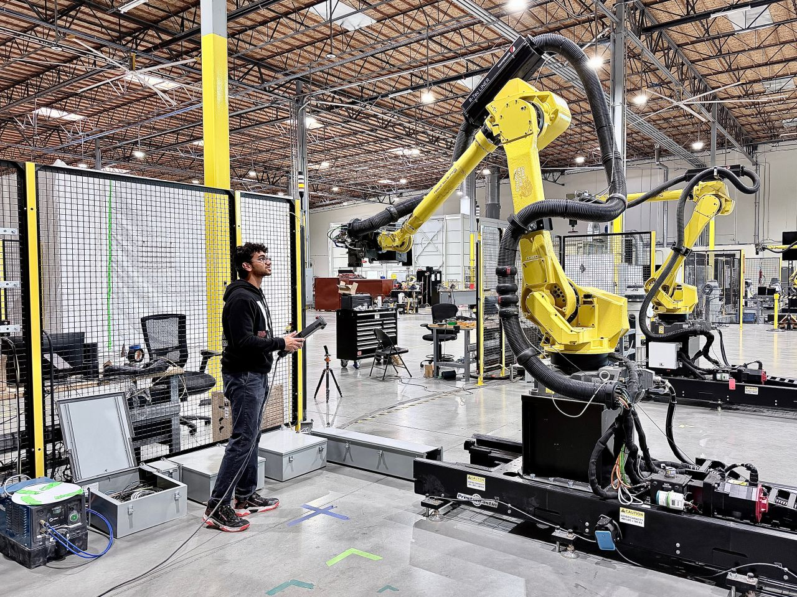
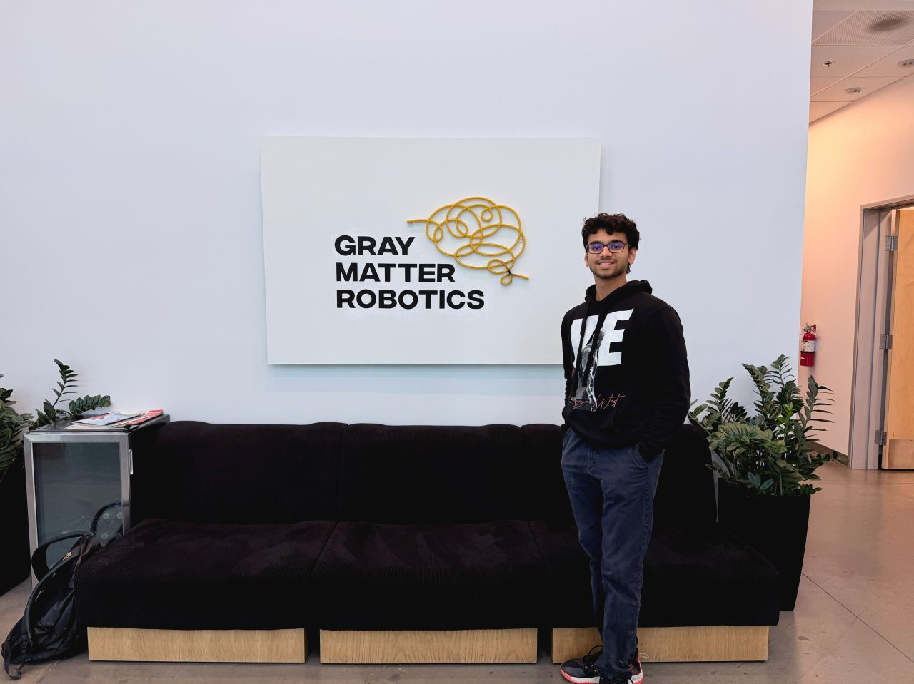

Robotics Engineer, Systems and Applications (GrayMatter Robotics)
I joined GrayMatter Robotics in Los Angeles, CA as a Robotics Engineer, working on the company's AI-driven robotic surface-finishing platform, GMR-AI, which lets a robot scan an unfamiliar part, understand its geometry,
and generate its own toolpath for sanding, polishing, or finishing rather than relying on a hand-taught program. After my first stint standing up the FANUC, vision, and software stack behind that platform, I moved into a
Systems and Applications role focused on the deployment side of the business: getting finished systems installed, validated, and handed off cleanly at customer sites.
Role Overview
GrayMatter Robotics builds autonomous robotic cells that scan a part, plan a toolpath, and execute sanding or polishing operations without a human pre-programming every motion. Across my time at the company, my work has spanned both sides of what it takes to make that system real in a factory: the engineering that makes the robot capable (robot programming, sensor integration, and software architecture), and the engineering that makes a deployment succeed once it leaves the shop (on-site process, installation, and handoff to the customer's operators). The sections below walk through both phases of the role in order.

Phase One: Robotics Engineer (January 2026 – May 2026)
My first months at GrayMatter were spent on the core technical stack: programming the robots, wiring in the vision hardware that lets a cell "see" each part, and building the software that ties scanning, planning, and execution together.
FANUC Robot Deployment and On-Site Integration
I programmed and deployed FANUC robot arms to perform automated scanning and sanding on complex production parts. This included writing and tuning the robot-side programs that execute scan passes and finishing motions,
as well as configuring I/O and communication between the FANUC controller and the rest of the cell (vision PCs, end-effector tooling, and the ROS2 application layer).
A significant part of this work happened on-site at customer facilities: bringing a new robotic cell online, running system activation checklists, and working through real-world constraints like fixturing, part variation,
and cell layout that don't show up in a simulated environment. Getting a system from "working in the shop" to "reliable in someone else's factory" was the central engineering challenge of this phase.
Multi-Sensor 3D Vision Integration
To let the robot adapt to irregular part geometries instead of following a fixed, pre-taught path, I integrated multiple 3D vision systems into the pipeline, including LMI, Zivid, and Alvium cameras and sensors.
Each vision system had its own SDK, calibration process, and data format, so a large part of this work involved building a consistent interface between the sensors and the robot's motion planner.
The resulting point-cloud and image data was used to localize the part in the cell, identify surface geometry, and adjust the robot's toolpath in real time, enabling the same system to handle a range of part shapes and sizes
without needing a new program for every variant.

ROS2 Applications and Docker-Based Deployment
The scanning, planning, and execution logic ran as a set of ROS2 nodes, which I developed and maintained to coordinate vision input, motion planning, and robot control in a single pipeline.
To keep deployments consistent across development machines and production cells, I containerized these applications with Docker, managing images and configurations so that a system could be rebuilt or moved to a new customer site
without re-creating the environment by hand.
This mattered in practice: production environments needed to be reliable and reproducible, while the development environment needed to move fast, and the Docker-based workflow let both coexist without one slowing down the other.
Adaptive Error Detection for Sanding Quality
I extended the robotic sanding workflows with error detection mechanisms aimed at catching over-sanding and under-sanding on complex geometries, a common failure mode when a single fixed program is applied to parts with
subtle shape variation. This involved feeding surface and process data back into the system so it could flag or correct passes that removed too much or too little material, rather than relying purely on an open-loop program.
Closing this feedback loop directly improved finishing precision and consistency, which is the core value proposition of an autonomous sanding system: matching or exceeding what a skilled human operator can do, repeatably.
Phase Two: Robotics Engineer, Systems and Applications (August 2026 – Present)
Having helped build the underlying robot and software stack, I moved into a role focused on the deployment side: making sure a system that works technically also lands well operationally at a customer site.
On-Site Deployment Process Development and Customer Handoff
My current focus is intensive process development for on-site robot deployment at customer facilities, with the goal of making every installation smoother and more repeatable than the last. That means tightening up the
steps between a robot arriving on a customer's floor and that customer's own team being able to run it independently: sequencing installation tasks, anticipating the site-specific issues that tend to slow deployments down,
and building a clearer, more consistent handoff process for operations teams who did not build the system themselves.
Where my earlier work was about making the robot capable, this phase is about making capability repeatable across many different customer environments, and about closing the loop between engineering and the people who
ultimately operate the system day to day.
Impact and Applications
The systems I have worked on are deployed in real manufacturing environments where manual sanding and finishing is repetitive, dusty, and ergonomically difficult for human workers. Automating these operations with FANUC robots, multi-sensor vision, adaptive control, and a disciplined deployment process:
- Improves worker conditions by removing people from repetitive, dusty, and physically demanding finishing tasks.
- Increases consistency and quality of surface finishing across high-mix production, where part shape and size vary from run to run.
- Reduces scrap, rework, and cycle time by catching over- and under-sanding before it becomes a defect.
- Shortens time-to-value for customers by turning installation and handoff into a smoother, more predictable process rather than a one-off engineering effort.
This experience has given me a full-stack view of what it takes to move a robotics system out of the lab and into a live factory: integrating heterogeneous hardware, building software that is both fast to develop and reliable to deploy, and treating on-site commissioning and handoff as a core part of the engineering process rather than an afterthought.